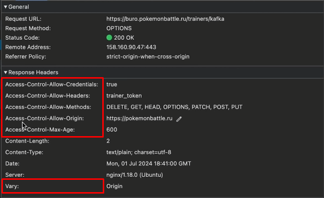
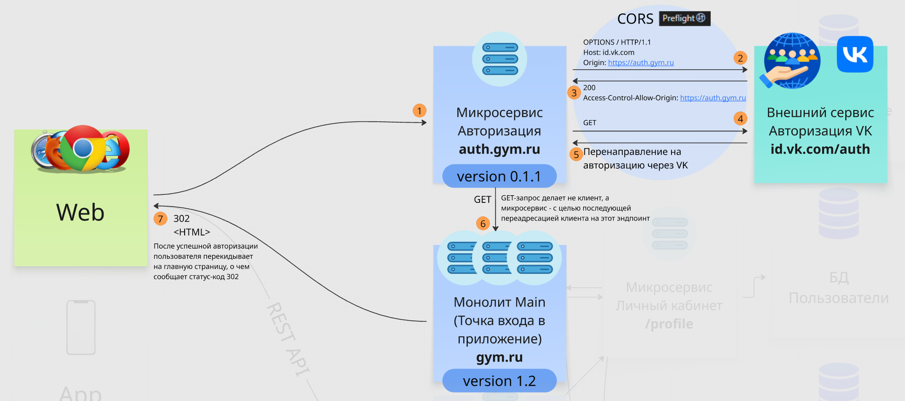

Продолжаем изучать технологии и подходы современного веба, обсудим такую тему как CORS.
На что смотреть во время тестирования:
CORS — механизм, обеспечивающий доступ к API (host) с разных источников (origin) с помощью специальных заголовков и, если требуется, предварительных запросов через метод OPTIONS (Preflight). В ответ на такой предварительный запрос возвращаются корс-заголовки группы Access-Control, которые указывают, как можно общаться с API с текущего домена.
CORS запросы могут быть как простые (без Preflight, при соблюдении определенных требований: методы GET HEAD POST, ограниченный набор стандартных заголовков), так и предварительные (Preflight) — отдельный предзапрос с использованием метода OPTIONS.
В тестировании важно это понимать, так как для некоторых запросов в Postman придется вручную менять заголовок запроса Origin на свой. Иначе CORS заблокирует запрос.

Разберем ответ на предзапрос на скрине выше. В данном случае делался кроссдоменный POST запрос (с домена pokemonbattle.ru на домен buro.pokemonbattle.ru) с авторизованного клиента, соответственно, в предзапросе клиент спрашивает необходимые заголовки и получает ответ с сервера, где хедером:

Если захочешь расписать подробно про корсы в своей легенде, можешь ознакомиться с этим механизмом на уровне разработки, посмотреть примеры ошибок связанных с корсами, примеры реализации.
В целом тема корсов популярна, но не часто поднимается на собеседованиях, далеко не каждый собеседующий QA лид её знает на должном уровне. Однако её уверенное знание и рассказ с примерами в своей легенде покажет тебя как синьора и пойдет жирным плюсом.